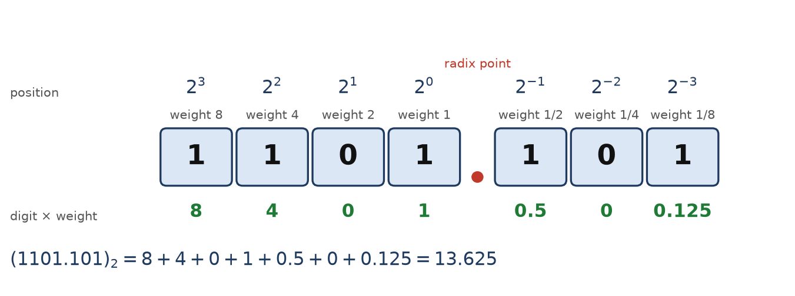
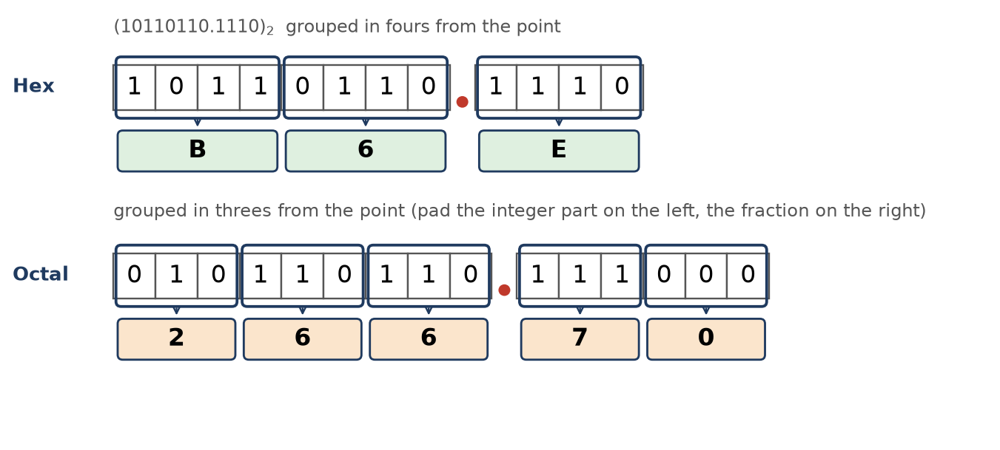
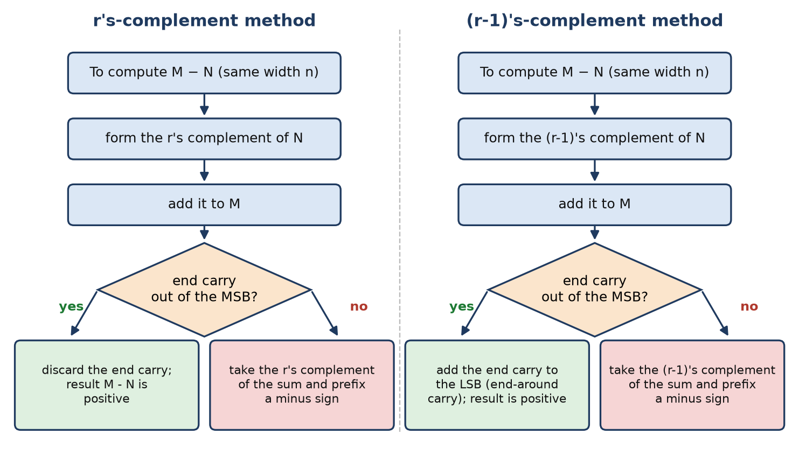

Chapter 7: Number Systems and Complements¶
Positional notation, base conversion, and the complement trick that turns subtraction into addition
A digital computer has only two symbols to work with, 0 and 1, and yet it must handle every quantity we care about: prices, temperatures, addresses, pixel intensities. Before we can ask how a machine adds, subtracts or compares numbers, we have to settle a more basic question: how do we write a number using only those two symbols, and how do we move between that writing and the decimal notation people read? This chapter answers both parts. It starts from the idea that every numeral we use is positional, builds the general formula for the value of a numeral in any base, and then develops systematic conversion procedures between binary, octal, decimal and hexadecimal, including numbers with fractional parts.
The second half of the chapter introduces complements. The circuits of Unit 1 and Unit 2 gave us an adder but no subtractor, and building a separate subtractor would double the arithmetic hardware. Complements remove the need for one: for every base there are two ways to represent "the negative of N" as an ordinary positive numeral, and adding that numeral gives exactly the result of subtracting N. The one idea that runs through the whole of this unit is that a computer has no minus sign and no subtractor; every negative number and every subtraction is a complement and an addition. Once you see why the carry out of the leftmost column is thrown away (or fed back in), and why its absence signals a negative answer, the adder-subtractor circuit of Unit 2 and the signed arithmetic of the next chapter will follow almost automatically.
What you will learn
- Write the value of a numeral in any base \(r\) as a weighted sum of powers of \(r\), and convert any numeral to decimal.
- Convert decimal integers and fractions to binary, octal and hexadecimal, using repeated division for the integer part and repeated multiplication for the fraction.
- Convert between binary, octal and hexadecimal by grouping bits, padding on the correct side.
- Form the \((r-1)\)'s complement and the \(r\)'s complement of a number (1's and 2's complement in binary, 9's and 10's complement in decimal).
- Subtract by adding a complement, and interpret the end carry as the signal that the answer is positive or negative.
7.1 Positional Notation¶
When you read the price 3405 you never think of four loose digits. You read three thousands, four hundreds, no tens and five ones. Each digit is silently multiplied by a power of ten that depends on where the digit sits, and the products are added. The digit tells you how many; the position tells you of what. A numeral system in which the value of a digit depends on its place in this way is called positional or weighted, and every number system used inside computers is of this kind.
A computer does exactly what you do with 3405, with one difference: it runs out of symbols after 0 and 1, so its place values are powers of two (1, 2, 4, 8, 16, and so on) instead of powers of ten. Change the base and every column is worth a different amount. Nothing else changes.
Base (radix) and the positional value formula
A number system with base (or radix) \(r\) uses \(r\) distinct digits \(0, 1, \ldots, r-1\). A numeral with \(n\) digits before the radix point and \(m\) digits after it, written \(a_{n-1}\ldots a_1 a_0 . a_{-1} a_{-2} \ldots a_{-m}\), has the value
The dot is the radix point. The leftmost digit is the most significant digit (MSD) and the rightmost digit is the least significant digit (LSD); in a binary numeral they are the MSB and LSB.
Positions are counted from 0 at the radix point, increasing to the left and becoming negative to the right. Figure 7.1 applies the formula to the binary numeral 1101.101.

Four bases are in everyday use in computing, summarised in Table 7.1. Binary is the base the hardware forces on us because a switch has two states. Octal and hexadecimal exist purely for human convenience: because \(8 = 2^3\) and \(16 = 2^4\), each octal digit stands for exactly three bits and each hexadecimal digit for exactly four, so they act as compact shorthand for long bit strings (Section 7.4). Decimal remains the notation for human input and output.
| System | Base \(r\) | Digits used | Typical use | Example | Decimal value |
|---|---|---|---|---|---|
| Binary | 2 | 0, 1 | internal machine representation | 1011.1 |
\(8+0+2+1+0.5 = 11.5\) |
| Octal | 8 | 0 to 7 | shorthand for binary, 3 bits per digit | 57 |
\(5\times 8 + 7 = 47\) |
| Decimal | 10 | 0 to 9 | human input and output | 47 |
\(4 \times 10 + 7 = 47\) |
| Hexadecimal | 16 | 0 to 9, A to F | shorthand for binary, 4 bits per digit | 2F |
\(2 \times 16 + 15 = 47\) |
Table 7.1: The four number systems used in computing. In hexadecimal the letters A, B, C, D, E, F stand for the digit values 10, 11, 12, 13, 14, 15.
The last row of Table 7.1 shows something worth noticing: 57 in octal, 47 in decimal and 2F in hexadecimal are the same quantity. Table 7.2 lists the first sixteen values in all four systems; it is worth learning the binary column by heart, because the whole grouping method of Section 7.4 rests on it.
| Decimal | Binary | Octal | Hex | Decimal | Binary | Octal | Hex |
|---|---|---|---|---|---|---|---|
| 0 | 0000 | 0 | 0 | 8 | 1000 | 10 | 8 |
| 1 | 0001 | 1 | 1 | 9 | 1001 | 11 | 9 |
| 2 | 0010 | 2 | 2 | 10 | 1010 | 12 | A |
| 3 | 0011 | 3 | 3 | 11 | 1011 | 13 | B |
| 4 | 0100 | 4 | 4 | 12 | 1100 | 14 | C |
| 5 | 0101 | 5 | 5 | 13 | 1101 | 15 | D |
| 6 | 0110 | 6 | 6 | 14 | 1110 | 16 | E |
| 7 | 0111 | 7 | 7 | 15 | 1111 | 17 | F |
Table 7.2: The values 0 to 15 in decimal, binary, octal and hexadecimal.
The powers of two that appear as binary place values are also worth remembering (Table 7.3), since they turn up constantly when we talk about memory sizes and word lengths.
| \(n\) | 0 | 1 | 2 | 3 | 4 | 5 | 6 | 7 | 8 | 9 | 10 | 11 | 12 | 16 | 20 | 30 |
|---|---|---|---|---|---|---|---|---|---|---|---|---|---|---|---|---|
| \(2^n\) | 1 | 2 | 4 | 8 | 16 | 32 | 64 | 128 | 256 | 512 | 1024 | 2048 | 4096 | 65,536 | 1 M | 1 G |
Table 7.3: Powers of two (here 1 M = 1,048,576 = \(2^{20}\) and 1 G = 1,073,741,824 = \(2^{30}\)).
Always attach the base
The numeral 10 means ten in decimal, two in binary, eight in octal and sixteen in hexadecimal. Without a subscript (or a prefix or suffix that says which base is meant) a numeral is ambiguous, and in this unit that ambiguity costs marks. Write \((1101)_2\), \((1101)_{10}\) and so on, and keep the subscript attached throughout your working.
A bigger base does not mean a bigger number
The value of a number does not change when you rewrite it in another base; only its appearance does. \((255)_{10}\), \((FF)_{16}\) and \((11111111)_2\) are the same quantity in different clothes. A higher base needs fewer digits to write the same value, which is exactly why hexadecimal is a good shorthand for long bit strings.
7.2 Converting from Any Base to Decimal¶
Converting a numeral from any base to decimal is a direct application of the positional formula: multiply each digit by its place value, a power of \(r\), and add. The arithmetic is done in decimal, which is why this direction is the easy one. For a binary numeral the weights to the left of the point are 8, 4, 2, 1 (and onward as 16, 32, 64, ...), and to the right of the point they are \(\tfrac12, \tfrac14, \tfrac18, \ldots\)
Example 7.1: Binary and hexadecimal to decimal
Problem. Convert (a) \((1101.101)_2\) and (b) \((B65F)_{16}\) to decimal.
(a) The weights left of the point are 8, 4, 2, 1 and right of the point are \(\tfrac12, \tfrac14, \tfrac18\) (Figure 7.1):
(b) The weights are \(16^3 = 4096\), \(16^2 = 256\), \(16^1 = 16\) and \(16^0 = 1\), and the digit values are \(B = 11\), \(6\), \(5\), \(F = 15\):
Answer. \((1101.101)_2 = (13.625)_{10}\) and \((B65F)_{16} = (46687)_{10}\).
The method works for any base, not only the powers of two; the weights are simply powers of whatever the base is.
Example 7.2: A base that is not a power of two, and more hexadecimal
Problem. Convert (a) \((2413)_5\), (b) \((3A7)_{16}\) and (c) \((101101.011)_2\) to decimal.
(a) Base 5 uses the digits 0 to 4 and has weights \(125, 25, 5, 1\):
(b) With \(A = 10\) and weights \(256, 16, 1\):
(c) The integer bits \(101101\) have weights \(32, 16, 8, 4, 2, 1\) and the fraction bits \(011\) have weights \(\tfrac12, \tfrac14, \tfrac18\):
Answer. \((2413)_5 = 358\), \((3A7)_{16} = 935\), \((101101.011)_2 = 45.375\).
7.3 Converting from Decimal to Any Base¶
Going the other way needs a little more care, because we now do the arithmetic in the old base (decimal) while producing digits of the new one. The integer part and the fractional part of the number are converted by two different procedures and then joined at the radix point.
Two separate procedures
Integer part: repeated division by \(r\). Divide the integer by \(r\), record the remainder, divide the quotient by \(r\) again, and continue until the quotient is 0. The remainders are the digits of the answer; the first remainder is the least significant digit and the last is the most significant, so you read them bottom to top.
Fraction part: repeated multiplication by \(r\). Multiply the fraction by \(r\), record the integer part of the product (it is the next digit), then multiply the remaining fractional part by \(r\) again. The digits come out in order, most significant first, so you read them top to bottom. Stop when the fractional part becomes 0, or when you have as many places as the problem asks for.
Why do the two halves use opposite operations and read in opposite directions? Because they grow in opposite directions from the radix point. Integer place values get bigger going left (... 8, 4, 2, 1), so the smallest place is peeled off first, and peeling it off means taking the remainder of a division; the remainders therefore emerge from the least significant end and must be read upward. Fractional place values get smaller going right (\(\tfrac12, \tfrac14, \ldots\)), so the largest place is peeled off first, by multiplying and taking the part that "carries out" past the point; the digits emerge in the order we want to write them. It is the same idea, mirror-imaged about the dot.
Example 7.3: Decimal to binary, integer and fraction
Problem. Convert \((41.6875)_{10}\) to binary.
Integer part 41, repeated division by 2:
41 / 2 = 20 remainder 1 (LSB)
20 / 2 = 10 remainder 0
10 / 2 = 5 remainder 0
5 / 2 = 2 remainder 1
2 / 2 = 1 remainder 0
1 / 2 = 0 remainder 1 (MSB)
read bottom-up: 1 0 1 0 0 1
Fraction part 0.6875, repeated multiplication by 2:
0.6875 x 2 = 1.375 -> 1 (first fraction bit)
0.375 x 2 = 0.75 -> 0
0.75 x 2 = 1.5 -> 1
0.5 x 2 = 1.0 -> 1 (fraction now 0, stop)
read top-down: . 1 0 1 1
Check. \((101001.1011)_2 = 32 + 8 + 1 + \tfrac12 + \tfrac18 + \tfrac1{16} = 41 + 0.6875\).
Answer. \((41.6875)_{10} = (101001.1011)_2\).
Notice the check at the end of the example. Converting the answer back to decimal takes seconds and catches almost every slip, so make it a habit.
The same two procedures work for any target base; only the divisor and multiplier change. When the target is octal, the divisor is 8; when it is hexadecimal, it is 16, and a remainder of 10 to 15 is written as the letters A to F.
Example 7.4: Decimal to octal, with a fraction cut off at four places
Problem. Convert \((153.513)_{10}\) to octal, keeping four places after the point.
Integer part 153, divide by 8: \(153/8 = 19\) remainder 1; \(19/8 = 2\) remainder 3; \(2/8 = 0\) remainder 2. Reading bottom-up gives \(231\).
Fraction part 0.513, multiply by 8:
0.513 x 8 = 4.104 -> 4
0.104 x 8 = 0.832 -> 0
0.832 x 8 = 6.656 -> 6
0.656 x 8 = 5.248 -> 5 (stop at four places)
Answer. \((153.513)_{10} \approx (231.4065)_8\). The fraction does not terminate, so the result is an approximation; the next digit would be 1 (from \(0.248 \times 8 = 1.984\)), so truncating to four places loses less than one unit in the last place.
Example 7.5: Decimal integer to octal and hexadecimal, and a fraction to binary
Problem. (a) Convert \((741)_{10}\) to octal and to hexadecimal by repeated division. (b) Convert \((89.625)_{10}\) to binary.
(a) Octal. \(741/8 = 92\) r 5; \(92/8 = 11\) r 4; \(11/8 = 1\) r 3; \(1/8 = 0\) r 1. Reading upward: \(1345\).
Hexadecimal. \(741/16 = 46\) r 5; \(46/16 = 2\) r 14 (E); \(2/16 = 0\) r 2. Reading upward: \(2E5\).
Check. \(1\times 512 + 3 \times 64 + 4 \times 8 + 5 = 741\) and \(2 \times 256 + 14 \times 16 + 5 = 741\).
(b) Integer 89: \(89/2 = 44\) r 1; \(44/2 = 22\) r 0; \(22/2 = 11\) r 0; \(11/2 = 5\) r 1; \(5/2 = 2\) r 1; \(2/2 = 1\) r 0; \(1/2 = 0\) r 1, giving \(1011001\). Fraction 0.625: \(0.625 \times 2 = 1.25 \to 1\); \(0.25 \times 2 = 0.5 \to 0\); \(0.5 \times 2 = 1.0 \to 1\), giving \(.101\).
Answer. \((741)_{10} = (1345)_8 = (2E5)_{16}\) and \((89.625)_{10} = (1011001.101)_2\).
A fraction may never terminate¶
A fraction that terminates in decimal need not terminate in binary. A fraction terminates in base \(r\) only if its denominator (in lowest terms) contains no prime factors other than those of \(r\). Binary has only the factor 2, so only fractions whose denominators are powers of two, such as \(\tfrac12\), \(\tfrac38\) or \(\tfrac{11}{16}\), terminate. The friendly-looking decimal \(0.1\) is \(\tfrac1{10}\), and 10 has the factor 5. Working the multiplication procedure shows what happens:
0.1 x 2 = 0.2 -> 0
0.2 x 2 = 0.4 -> 0
0.4 x 2 = 0.8 -> 0
0.8 x 2 = 1.6 -> 1
0.6 x 2 = 1.2 -> 1
0.2 x 2 = 0.4 -> 0 (the fraction 0.2 has appeared before: the pattern repeats)
The multiplicand 0.2 of the second line has come back as the multiplicand of the sixth line, so the cycle of digits \(0011\) repeats forever: \((0.1)_{10} = (0.0\overline{0011})_2 = (0.000110011001100\ldots)_2\). A machine with a finite number of bits must chop this off and store an approximation. That single fact, not any bug in a program, is why floating-point arithmetic famously gives \(0.1 + 0.2 \ne 0.3\); we return to it in the next chapter.
7.4 Binary, Octal and Hexadecimal: The Grouping Shortcuts¶
Converting between decimal and a power-of-two base takes arithmetic. Converting among binary, octal and hexadecimal takes none. Because \(8 = 2^3\) and \(16 = 2^4\), each octal digit corresponds to exactly three bits and each hexadecimal digit to exactly four (Table 7.2). To convert, you simply regroup the bits and substitute.
The grouping rule
- Binary to octal: group the bits in threes, starting from the radix point and working outwards.
- Binary to hexadecimal: group the bits in fours, starting from the radix point and working outwards.
- Pad the outermost group with zeros if it is short: for the integer part pad on the left, for the fraction part pad on the right.
- Octal or hexadecimal to binary: replace every digit by its 3-bit or 4-bit pattern.
- Octal to hexadecimal (or the reverse) has no direct shortcut; go through binary.
Figure 7.2 shows the binary numeral \(10110110.1110\) grouped both ways.

Pad in the right direction
The integer part is padded on the left; the fraction part is padded on the right. Padding the wrong side changes the value, because zeros added at the wrong end of the fraction become leading fractional zeros. This is the single most common conversion error.
Example 7.6: Hexadecimal to binary, octal and decimal
Problem. Convert \((2AF.C)_{16}\) to binary, to octal and to decimal.
Binary. Replace each hex digit by four bits: \(2 = 0010\), \(A = 1010\), \(F = 1111\), \(C = 1100\). So \((2AF.C)_{16} = (0010\,1010\,1111.1100)_2 = (1010101111.11)_2\), dropping the leading zeros of the integer part and the trailing zeros of the fraction.
Octal. Regroup the same bits in threes from the point: integer \(001\,010\,101\,111 = 1\,2\,5\,7\); fraction \(110 = 6\). So \((2AF.C)_{16} = (1257.6)_8\).
Decimal. \(2 \times 256 + 10 \times 16 + 15 = 687\) and \(.C = 12/16 = 0.75\), so the value is \(687.75\). As a check on the octal result: \(1 \times 512 + 2 \times 64 + 5 \times 8 + 7 + \tfrac68 = 687.75\).
Answer. \((2AF.C)_{16} = (1010101111.11)_2 = (1257.6)_8 = (687.75)_{10}\).
Example 7.7: Hexadecimal to octal through binary
Problem. Convert \((B6F.4C)_{16}\) to octal.
Solution. Hexadecimal and octal are both powers of two, so go through binary. Replace each hex digit by four bits:
B 6 F . 4 C
1011 0110 1111 . 0100 1100
Regroup in threes outwards from the point. The integer bits \(101101101111\) split exactly into \(101\,101\,101\,111\). The fraction bits \(01001100\) split as \(010\,011\,00\), and the last group is padded on the right to \(000\):
101 101 101 111 . 010 011 000
5 5 5 7 . 2 3 0
Check through decimal. \((B6F)_{16} = 11 \times 256 + 6 \times 16 + 15 = 2927 = (5557)_8\), and \((.4C)_{16} = \tfrac{4}{16} + \tfrac{12}{256} = 0.296875 = \tfrac28 + \tfrac3{64} = (.23)_8\).
Answer. \((B6F.4C)_{16} = (5557.23)_8\).
Example 7.8: One value in every base
Problem. Write \((41.6875)_{10} = (101001.1011)_2\) (Example 7.3) in octal and in hexadecimal.
Octal. Group in threes from the point: \(101\,|\,001 \,.\, 101\,|\,100\), where the fraction \(1011\) is padded on the right with \(00\). This gives \(51.54\).
Hexadecimal. Group in fours from the point: \(0010\,|\,1001\,.\,1011\), the integer part padded on the left. This gives \(29.B\).
Answer. \(101001.1011_2 = 51.54_8 = 29.B_{16} = 41.6875_{10}\).
Three more small cases show the method working in the other directions. Binary to octal: \(1011\,0110 = 10\,110\,110\), padded on the left to \(010\,110\,110\), which is \(266_8\). Binary to hex: \(1011\,0110 = B6_{16}\). And \((173)_{10} = 10101101_2 = AD_{16}\), while \((745)_8 = 111\,100\,101 = 1\,1110\,0101 = (1E5)_{16}\), where the regrouping in fours begins at the right.
Why programmers write bytes in hexadecimal¶
A byte is eight bits, which is exactly two hexadecimal digits, one per nibble (four bits). Hexadecimal therefore lines up cleanly with byte and nibble boundaries: a byte is always two characters, a 16-bit word is four, and a 32-bit register is eight, such as 41540000. Octal groups three bits, and three does not divide eight, so a byte is awkward in octal. It needs three octal digits (the values run from 000 to 377), and the leftmost of them can hold only the top two bits, so byte boundaries fall in the middle of octal digits. Octal fits naturally only on machines whose word length is a multiple of three bits, such as the twelve-, twenty-four- and thirty-six-bit machines of the past. That is why memory addresses, colour codes such as FF8800 and instruction codes are written in hexadecimal throughout computing, and why hexadecimal is used from here on in this book.
Example 7.9: Spot the error in an octal conversion
Problem. A student converts \((2C)_{16}\) to binary as \(0010\,1100\), then to octal by grouping from the left: \(001\,011\,00\), padded to \(001\,011\,000 = (130)_8\). What is wrong?
Solution. The grouping started at the wrong end. Octal groups must start from the radix point, which for an integer is the least significant bit, not from the left. The correct grouping is \(101100\), which splits from the right into \(101\,100 = (54)_8\).
Check. \((2C)_{16} = 2 \times 16 + 12 = 44\) and \((54)_8 = 5 \times 8 + 4 = 44\), whereas the student's \((130)_8 = 88\) is twice as large, the value you get by shifting the bits one place to the left.
Answer. The rule broken is "group outwards from the radix point"; the correct value is \((54)_8\).
7.5 Complements¶
A computer has an adder but no subtractor. Complements let it subtract by adding, so the same hardware does both. This is the idea behind the adder-subtractor of Unit 2, where a control input \(M\) makes every bit of \(B\) pass through an exclusive-OR gate and also supplies the carry-in; by the end of this chapter you will see why those two steps perform a subtraction.
The odometer that rolls backwards¶
Picture a car odometer with six wheels. It can only count up, and it wraps from 999999 back to 000000. Suppose it reads 000000 and you want it to show \(-1\). You cannot turn it back, so you roll it forward until it wraps, landing on 999999. On this wheel, 999999 behaves like \(-1\): add 1 to it and you wrap to 000000, exactly what \(-1 + 1\) should give. The "distance to the next full wrap" is precisely what is called the \(r\)'s complement. Subtraction becomes addition because on a finite wheel, going back is the same as going far enough forward. Every complement trick in this chapter is that one idea in disguise.
Definitions that work in any base¶
For every base \(r\) there are two complements of an \(n\)-digit number \(N\).
The two complements
The diminished-radix complement, or \((r-1)\)'s complement, of an \(n\)-digit number \(N\) is
The radix complement, or \(r\)'s complement, is
The \(r\)'s complement of \(0\) is \(0\) (obtained by discarding the end carry).
Since \(r^n - 1\) is a string of \(n\) digits each equal to \(r - 1\), the \((r-1)\)'s complement is formed digit by digit: subtract each digit of \(N\) from \(r - 1\). No borrowing is ever needed, which makes it easy for hardware. The \(r\)'s complement is then just that result plus one. The four named complements are special cases of these two general ones, as Table 7.4 shows.
| Base | \((r-1)\)'s complement | \(r\)'s complement |
|---|---|---|
| Binary (\(r = 2\)) | 1's complement: invert every bit | 2's complement: invert every bit, then add 1 |
| Decimal (\(r = 10\)) | 9's complement: subtract each digit from 9 | 10's complement: 9's complement, then add 1 |
Table 7.4: The four named complements.
Forming the complements¶
The recipes are short enough to state as fast rules.
- 1's complement: change every 0 to 1 and every 1 to 0.
- 2's complement, Method A: take the 1's complement, then add 1.
- 2's complement, Method B (copy and flip): scan from the least significant bit; copy bits up to and including the first 1; complement every bit to the left of that.
- 9's complement: subtract each digit from 9.
- 10's complement: add 1 to the 9's complement, or subtract the rightmost non-zero digit from 10 and every digit to its left from 9, copying trailing zeros unchanged.
Method B gives the same answer as Method A with no carry propagation, and it is the quickest way to do a 2's complement by hand. It works because of what the "+1" does to the inverted number. Suppose the original number ends in a 1 followed by \(k\) zeros. After inversion it ends in a 0 followed by \(k\) ones; adding 1 turns those \(k\) ones back into zeros and the carry stops at the 0, which becomes a 1. The trailing \(k\) zeros and the first 1 are therefore unchanged, and everything to their left is simply inverted.
Example 7.10: 1's and 2's complement by two methods
Problem. Find the 1's and 2's complement of \(1011000\) (seven bits).
1's complement. Invert every bit: \(0100111\).
2's complement, Method A. \(0100111 + 1 = 0101000\).
2's complement, Method B. From the right, there are three trailing zeros and then the first 1. Copy \(1000\); complement the remaining bits \(101 \to 010\). The result is \(0101000\).
Answer. 1's complement \(= 0100111\); 2's complement \(= 0101000\). Both methods agree.
Example 7.11: 9's and 10's complement
Problem. Find the 9's and 10's complement of the six-digit decimal number \(546700\).
9's complement. \(999999 - 546700 = 453299\).
10's complement. \(453299 + 1 = 453300\), which is also \(1000000 - 546700\).
Answer. 9's complement \(= 453299\); 10's complement \(= 453300\).
Table 7.5 shows further cases, one binary and one decimal, including two special values that are worth checking.
| \(N\) (8-bit) | 1's complement | 2's complement | \(N\) (3-digit decimal) | 9's | 10's |
|---|---|---|---|---|---|
0101 1100 |
1010 0011 |
1010 0100 |
546 | 453 | 454 |
0000 0000 |
1111 1111 |
0000 0000 |
000 | 999 | 000 |
1000 0000 |
0111 1111 |
1000 0000 |
100 | 899 | 900 |
Table 7.5: Complements of selected 8-bit binary numbers and 3-digit decimal numbers.
The second row shows that the 2's complement of 0 is 0: inverting gives all ones, adding 1 makes all zeros with a carry that falls off the end. So 2's complement has only one zero, which is a great advantage over 1's complement (where zero has two forms, 0000 0000 and 1111 1111); the next chapter develops that point. The third row shows that the 2's complement of 1000 0000 is itself. That pattern will turn out to represent \(-128\), which has no positive counterpart in eight bits.
Example 7.12: More decimal complements
Problem. Find the 9's and 10's complements of (a) the five-digit number \(48502\), (b) \(250100\) and (c) \(009900\).
(a) \(99999 - 48502 = 51497\) is the 9's complement, so the 10's complement is \(51498\).
(b) \(999999 - 250100 = 749899\) and \(749899 + 1 = 749900\).
(c) \(999999 - 009900 = 990099\) and \(990099 + 1 = 990100\). Note that the leading zeros are digits of the number and are complemented too.
Answer. (a) 51497 and 51498; (b) 749899 and 749900; (c) 990099 and 990100.
Always work to a fixed width
Complements are defined for an \(n\)-digit number, so decide \(n\) before you start and keep every intermediate value at that width. The 2's complement of \(0011\) on four bits is \(1101\), but on eight bits it is \(1111\,1101\). Forgetting the leading zeros, or the \(+1\) when forming a 2's or 10's complement, are the two most common slips.
Finally, taking the \(r\)'s complement twice returns the original number, since \(r^n - (r^n - N) = N\). This is why one and the same circuit both negates and un-negates a number.
7.6 Subtraction Using Complements¶
Now to put complements to work. To compute \(M - N\), where \(M\) and \(N\) are both \(n\)-digit numbers in base \(r\), we add to \(M\) a complement of \(N\). The two complements give two slightly different procedures, summarised in Figure 7.3.

Subtraction with the \(r\)'s complement
To compute \(M - N\):
- Form the \(r\)'s complement of \(N\).
- Add it to \(M\).
- If there is an end carry (a carry out of the most significant position), discard it. The result is positive and correct.
- If there is no end carry, the answer is negative. Take the \(r\)'s complement of the sum and put a minus sign in front.
Subtraction with the \((r-1)\)'s complement
Identical, except for step 3:
- If there is an end carry, add it back to the least significant position (the end-around carry) to get the positive result.
- If there is no end carry, the answer is negative: take the \((r-1)\)'s complement of the sum and prefix a minus sign.
The extra add-back step is precisely why 2's complement is preferred in hardware, where an additional pass through the adder costs time.
Why the end carry is discarded¶
Adding the \(r\)'s complement of \(N\) to \(M\) is really adding \(r^n - N\), so the raw sum is \(M + r^n - N = (M - N) + r^n\). The answer therefore comes out \(r^n\) too big, and the end carry is that \(r^n\): throwing it away subtracts it again. Nothing is being fudged.
This also explains what the end carry tells us. Suppose \(M \ge N\). Then \((M - N) + r^n \ge r^n\), so the sum has reached or passed \(r^n\), which in an \(n\)-digit register means a carry out of the top digit; the remaining \(n\) digits are \(M - N \ge 0\). Suppose instead \(M < N\). Then \((M - N) + r^n\) is less than \(r^n\), so there is no carry, and what remains in the register is \(r^n - (N - M)\), which is the \(r\)'s complement of the true magnitude \(N - M\). That is a negative result stored in complement form, so complementing once more recovers the magnitude. In one line: an end carry means the answer is positive; no end carry means the answer is negative and is itself in complement form.
The end carry is not part of the answer
Students often want to keep the leftmost carry bit and write a longer answer. In the \(r\)'s-complement method the end carry is thrown away; it is just the odometer wrapping past its top. In the \((r-1)\)'s-complement method it is not kept either; it is added back into the least significant digit. Its value lies in what it signals, namely the sign of the result.
Example 7.13: Binary subtraction with 2's complement, both signs
Problem. With \(X = 1010100\) (84) and \(Y = 1000011\) (67), find \(X - Y\) and \(Y - X\) using 2's complement on seven bits.
\(X - Y\). The 2's complement of \(Y\) is \(0111101\). Add:
1010100 (X = 84)
+ 0111101 (2's complement of Y)
---------
1 0010001 end carry = 1 -> discard
The result \(0010001 = 17\) is positive, and indeed \(84 - 67 = 17\).
\(Y - X\). The 2's complement of \(X\) is \(0101100\). Add:
1000011 (Y = 67)
+ 0101100 (2's complement of X)
---------
1101111 no end carry -> answer is negative
Take the 2's complement of \(1101111\): it is \(0010001 = 17\). So the answer is \(-17\).
Answer. \(X - Y = +17\) and \(Y - X = -17\).
Example 7.14: The same subtraction with 1's complement and the end-around carry
Problem. Compute \(84 - 67\) using 1's complement (\(X = 1010100\), \(Y = 1000011\)).
Solution. The 1's complement of \(Y\) is \(0111100\). Add:
1010100 (X)
+ 0111100 (1's complement of Y)
---------
1 0010000 end carry = 1
There is an end carry, so apply the end-around carry by adding it back to the least significant bit:
0010000
+ 1
---------
0010001 = 17
Answer. \(84 - 67 = +17 = 0010001\). The result is the same as with 2's complement, but an extra addition was needed.
A second short case on four bits, \(1010 - 0011\) (\(10 - 3\)): the 1's complement of \(0011\) is \(1100\) and \(1010 + 1100 = 1\,0110\). The end carry is added back: \(0110 + 1 = 0111 = 7\). The 2's complement method gives the same answer directly: \(1010 + 1101 = 1\,0111\), discard the carry, \(0111 = 7\).
Example 7.15: A subtraction that comes out negative
Problem. Compute \(0011 - 1010\) (\(3 - 10\)) using 2's complement on four bits.
Solution. The 2's complement of \(1010\) is \(0110\).
0011
+ 0110
------
1001 NO end carry
There is no end carry, so the answer is negative. The 2's complement of \(1001\) is \(0111 = 7\), so the answer is \(-7\).
Answer. \(3 - 10 = -7\). No end carry always means a negative result.
Decimal arithmetic follows the same pattern, which is a useful way to convince yourself that nothing is special about binary.
Example 7.16: Decimal subtraction with 10's and 9's complement
Problem. Compute \(72532 - 13250\) by (a) the 10's-complement method and (b) the 9's-complement method.
(a) 10's complement. The 10's complement of \(13250\) is \(100000 - 13250 = 86750\).
72532
+ 86750
-------
1 59282 end carry -> discard => 59282
(b) 9's complement. The 9's complement of \(13250\) is \(99999 - 13250 = 86749\).
72532
+ 86749
-------
1 59281 end carry -> end-around carry (+1) => 59282
Answer. \(72532 - 13250 = 59282\) by both methods.
Example 7.17: Why no end carry means negative: an odometer view
Problem. Using 10's complement on a four-digit odometer, compute \(250 - 700\) and explain what the missing end carry is telling us.
Solution. The 10's complement of \(0700\) is \(10000 - 0700 = 9300\). Add:
0250 no end carry (we never wrapped past 9999)
+ 9300
------
9550
Adding the complement really computes \(250 + (10000 - 700) = 9550\). To get the true answer we still owe a subtraction of 10000, so the result is \(9550 - 10000 = -450\). An end carry would have meant that we crossed 10000 and could safely discard it; no carry means we fell short of 10000, so the sum is a "wrapped" negative that must be re-complemented. The 10's complement of \(9550\) is \(0450\), with a minus sign in front.
Answer. \(250 - 700 = -450\). The absent end carry is the signal "the true result went below zero".
Example 7.18: Both orders of a decimal subtraction
Problem. Compute \(72532 - 03250\) using 10's complement, and then \(03250 - 72532\) as well (five digits).
First. The 10's complement of \(03250\) is \(96750\). Then \(72532 + 96750 = 1\,69282\); the end carry is discarded, giving \(+69282\).
Second. The 10's complement of \(72532\) is \(27468\). Then \(03250 + 27468 = 30718\), with no end carry, so the answer is negative. The 10's complement of \(30718\) is \(69282\), so the answer is \(-69282\).
Answer. \(+69282\) and \(-69282\): the same magnitude, as expected.
Example 7.19: Mixed signs with a three-digit 10's complement
Problem. Perform \((-68)_{10} + (+95)_{10}\) using 10's complement arithmetic on three-digit numbers. State what is done with the end carry and why.
Solution. A negative operand is represented by its 10's complement; for a three-digit number this is \(1000\) minus the number. So \(-68\) is stored as \(1000 - 068 = 932\). Add the representation of \(+95\):
932 (this stands for -68)
+ 095 (this is +95)
-----
1027
^
end carry
The end carry is discarded. Discarding it is not an approximation: the representation of \(-68\) is \(1000 - 68\), so the sum is \(1000\) too large, and the carry is that \(1000\). That a carry occurred tells us the result is positive, and the remaining three digits are the answer in ordinary form.
Answer. \(027\), that is \(+27\). Check: \(95 - 68 = 27\).
A last remark before we move on. In every example above the working used one fixed width, and the sign of the result came from the end carry. In the next chapter we will give the leftmost bit a permanent meaning as a sign bit and ask the hardware to cope with numbers that are not limited to the positive half of the wheel. Everything there is built on the two procedures just described.
7.7 Summary¶
Key points
- A positional numeral of base \(r\) has value \(N = \sum a_i r^i\); the digit gives "how many", the position gives "of what".
- Base \(r\) to decimal: multiply each digit by its place value and add. Decimal to base \(r\): divide repeatedly for the integer part (read remainders bottom-up) and multiply repeatedly for the fraction (read integer parts top-down).
- A fraction that terminates in decimal may repeat forever in binary (\(0.1\) is the typical case), so a finite machine stores only an approximation.
- One octal digit is exactly 3 bits and one hexadecimal digit exactly 4 bits. Group outwards from the radix point; pad the integer part on the left and the fraction on the right. Octal-to-hex goes through binary.
- The \((r-1)\)'s complement of \(N\) is \((r^n - 1) - N\) (invert every bit in binary, subtract each digit from 9 in decimal); the \(r\)'s complement is that plus 1. The 2's complement can also be formed by copying bits up to and including the first 1 from the right and inverting the rest.
- \(M - N\) with the \(r\)'s complement: add the complement of \(N\) to \(M\). End carry: discard it, the result is positive. No end carry: the result is negative; complement the sum to read the magnitude.
- With the \((r-1)\)'s complement an end carry is added back into the least significant digit (end-around carry). That extra step is why 2's complement is preferred.
- Always fix the word length first and keep every value at that width.
| Topic | Rule |
|---|---|
| Positional value | \(N = \sum a_i r^i\) |
| Base \(r\) to decimal | digit \(\times\) weight, then add |
| Decimal integer to base \(r\) | divide by \(r\), remainders read bottom-up |
| Decimal fraction to base \(r\) | multiply by \(r\), integer parts read top-down |
| Binary to octal / hex | group in 3s / 4s from the point; pad int. left, frac. right |
| 1's / 9's complement | invert each bit / subtract each digit from 9 |
| 2's / 10's complement | 1's / 9's complement plus 1 |
| 2's complement shortcut | copy up to and including first 1 from the right; invert the rest |
| \(r\)'s-complement subtraction | add; end carry: discard (positive); none: negative, recomplement |
| \((r-1)\)'s-complement subtraction | add; end carry: add back to LSB; none: negative, recomplement |
Table 7.6: Chapter summary.
7.8 Exercises¶
Exercise 7.1. The binary numeral \((1011.1)_2\) is equal in decimal to: (A) 11.1, (B) 11.5, (C) 13.5, (D) 23.0.
Answer
B. \(8 + 2 + 1 + 0.5 = 11.5\).
Exercise 7.2. The 2's complement of \(01100100\) is: (A) 10011011, (B) 10011100, (C) 10011010, (D) 01100011.
Answer
B. Invert to get \(10011011\), then add 1 to get \(10011100\). (Check: \(100 + 156 = 256\).)
Exercise 7.3. Two multiple-choice items. (i) \((57)_8\) equals which hexadecimal value? (A) 2F, (B) 3F, (C) 2E, (D) 4F. (ii) The 9's complement of the decimal number \(4085\) is: (A) 5914, (B) 5915, (C) 6085, (D) 4914.
Answer
(i) A. \((57)_8 = 101\,111_2 = 0010\,1111_2 = (2F)_{16}\), which is \(47\) in decimal. (ii) A. \(9999 - 4085 = 5914\) (5915 is the 10's complement).
Exercise 7.4. In \((r-1)\)'s-complement subtraction, an end carry means you must: (A) discard it, (B) add it back to the least significant digit, (C) treat the result as negative, (D) prefix a minus sign.
Answer
B. The end-around carry is added back to the least significant digit. Discarding it is the rule for the \(r\)'s complement.
Exercise 7.5. True or false: the \(r\)'s complement of a non-zero number equals its \((r-1)\)'s complement plus 1.
Answer
True. \(r^n - N = [(r^n - 1) - N] + 1\).
Exercise 7.6. Convert (a) \((101101.011)_2\) and (b) \((3A7)_{16}\) to decimal, showing the place-value expansion.
Answer
(a) \(32 + 8 + 4 + 1 + 0.25 + 0.125 = 45.375\). (b) \(3 \times 256 + 10 \times 16 + 7 = 768 + 160 + 7 = 935\).
Exercise 7.7. Convert \((89.625)_{10}\) to binary, showing the repeated division for the integer part and the repeated multiplication for the fraction.
Answer
Integer 89: remainders \(1, 0, 0, 1, 1, 0, 1\) (from \(89/2 = 44\) r 1, \(44/2 = 22\) r 0, \(22/2 = 11\) r 0, \(11/2 = 5\) r 1, \(5/2 = 2\) r 1, \(2/2 = 1\) r 0, \(1/2 = 0\) r 1), read upward: \(1011001\). Fraction: \(0.625 \times 2 = 1.25\) (1), \(0.25 \times 2 = 0.5\) (0), \(0.5 \times 2 = 1.0\) (1), so \(.101\). Answer: \((1011001.101)_2\).
Exercise 7.8. Convert \((741)_{10}\) to (a) octal and (b) hexadecimal by repeated division.
Answer
(a) Remainders upward give \((1345)_8\). (b) Remainders upward give \((2E5)_{16}\). Check: \(2 \times 256 + 14 \times 16 + 5 = 741\).
Exercise 7.9. Using only the grouping shortcut (no decimal step), convert \((3C5.E)_{16}\) to binary and then to octal.
Answer
\(3C5.E = 0011\,1100\,0101.1110\), so the binary value is \(1111000101.111\). Regroup in threes about the point: \(001\,111\,000\,101 . 111\) (the integer part is padded on the left, the fraction already fits), giving \((1705.7)_8\).
Exercise 7.10. Convert \((657)_8\) to hexadecimal via binary grouping.
Answer
\(657_8 = 110\,101\,111_2\). Regroup in fours from the right: \(1\,1010\,1111 = 0001\,1010\,1111\). Answer: \((1AF)_{16}\).
Exercise 7.11. Explain why memory is organised in 8-bit bytes, yet programmers write memory dumps in hexadecimal rather than octal. Would octal ever align neatly to a byte boundary?
Answer
A byte is 8 bits, which is exactly two hexadecimal digits of four bits each, so hex aligns cleanly with byte and nibble boundaries and a byte is always two characters. Octal groups three bits, and three does not divide eight: a byte needs three octal digits (000 to 377), and the leftmost digit holds only two of the byte's bits, so byte boundaries fall inside an octal digit. Octal aligns only with word lengths that are multiples of three bits (such as 12, 24 or 36), never with an 8-bit byte.
Exercise 7.12. Find the 1's and 2's complement of (a) \(10110100\) and (b) \(01101000\). Use the copy-and-flip method for at least one and check it with invert-and-add-1.
Answer
(a) 1's: \(01001011\); 2's: \(01001100\). Copy-and-flip: from the right copy \(100\) (two zeros and the first 1), then invert the remaining bits \(10110\) to \(01001\), giving \(01001100\). (b) 1's: \(10010111\); 2's: \(10011000\) (copy \(1000\), invert \(0110 \to 1001\) gives \(10011000\)).
Exercise 7.13. Find the 9's and 10's complement of (a) \(250100\) and (b) \(009900\).
Answer
(a) 9's: \(749899\); 10's: \(749900\). (b) 9's: \(990099\); 10's: \(990100\).
Exercise 7.14. Using the 2's-complement method, compute (a) \(1101011 - 1001010\) and (b) \(1001010 - 1101011\) in seven-bit binary. State the sign of each result and how you determined it.
Answer
(a) The 2's complement of \(1001010\) is \(0110110\). \(1101011 + 0110110 = 1\,0100001\). An end carry is present, so it is discarded and the result is positive: \(+0100001 = +33\). (b) The 2's complement of \(1101011\) is \(0010101\). \(1001010 + 0010101 = 1011111\), with no end carry, so the answer is negative. The 2's complement of \(1011111\) is \(0100001 = 33\), so the answer is \(-33\). Check: \(107 - 74 = 33\).
Exercise 7.15. Using the 1's-complement method, compute \(1010100 - 1000110\) and show the end-around carry.
Answer
The 1's complement of \(1000110\) is \(0111001\). \(1010100 + 0111001 = 1\,0001101\). The end carry is added back: \(0001101 + 1 = 0001110 = +14\). Check: \(84 - 70 = 14\).
Exercise 7.16. Compute \(62574 - 28376\) by (a) the 10's-complement method and (b) the 9's-complement method, and confirm that both agree.
Answer
(a) The 10's complement of \(28376\) is \(71624\); \(62574 + 71624 = 1\,34198\), so discard the carry: \(34198\). (b) The 9's complement is \(71623\); \(62574 + 71623 = 1\,34197\); add the end-around carry: \(34198\). Check: \(62574 - 28376 = 34198\).
Exercise 7.17. In your own words, explain why an end carry in \(r\)'s-complement subtraction of \(M - N\) means the result is positive and its absence means the result is negative.
Answer
Adding the \(r\)'s complement of \(N\) adds \(r^n - N\), so the raw sum is \(M + r^n - N\). If \(M \ge N\) the sum is at least \(r^n\), which produces an end carry (that carry is the \(r^n\) term, and discarding it leaves \(M - N \ge 0\)). If \(M < N\) the sum is below \(r^n\), so there is no carry, and what is left is \(r^n - (N - M)\), the \(r\)'s complement of the magnitude of a negative result, which must be re-complemented to be read.
Exercise 7.18. A student computes \(1000011 - 1010100\) (\(67 - 84\)) in seven-bit 2's complement as follows: "The 2's complement of \(1010100\) is \(0101100\). Adding \(1000011 + 0101100 = 1101111\). There is no end carry, so the answer is \(+1101111 = +111\)." Find the flaws and give the right answer.
Answer
There are two flaws. First, no end carry means the result is negative, not positive. Second, a negative result is in complement form and must be re-complemented to read its magnitude. The 2's complement of \(1101111\) is \(0010001 = 17\), so the answer is \(-17\). Check: \(67 - 84 = -17\).
Exercise 7.19. (a) Convert \((B6F.4C)_{16}\) to octal. (b) Convert \((2413)_5\) to decimal. (c) Convert \((58.375)_{10}\) to binary and to hexadecimal.
Answer
(a) \(1011\,0110\,1111.0100\,1100 \to 101\,101\,101\,111 . 010\,011\,000 = (5557.23)_8\). (b) \(2 \times 125 + 4 \times 25 + 1 \times 5 + 3 = 358\). (c) Integer 58: \(111010\); fraction \(0.375\): \(0.375 \times 2 = 0.75\) (0), \(\times 2 = 1.5\) (1), \(0.5 \times 2 = 1.0\) (1), so \(.011\). Binary: \(111010.011\). Grouping in fours: \(0011\,1010.0110 = (3A.6)_{16}\).
Exercise 7.20. Self-test. (a) Convert \(137_{10}\) to binary, octal and hexadecimal. (b) Convert \(0.34375_{10}\) to binary, showing the repeated multiplication. (c) Compute \(1010\,0110 - 0111\,0011\) on eight bits using 2's complement.
Answer
(a) \(137 = 1000\,1001_2 = 211_8 = 89_{16}\) (group the bits in threes and in fours). (b) \(0.34375 \times 2 = 0.6875\) (0), \(\times 2 = 1.375\) (1), \(0.375 \times 2 = 0.75\) (0), \(\times 2 = 1.5\) (1), \(0.5 \times 2 = 1.0\) (1). So \(0.34375 = (0.01011)_2\). (c) The 2's complement of \(0111\,0011\) is \(1000\,1101\). \(1010\,0110 + 1000\,1101 = 1\,0011\,0011\); discard the carry: \(0011\,0011 = 51\). Check: \(166 - 115 = 51\).